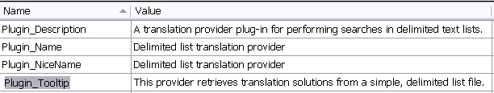
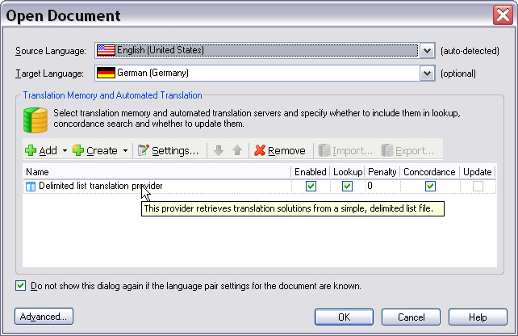
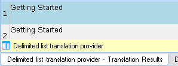

The Resources File
The resources file contains the strings and elements that users see in the user interface of Trados Studio, such as the plug-in name, icon, and description.
The PluginResources.resx file is one of the components provided by the project template. It contains a string named Plugin_Name, which defines the plug-in assembly name and defaults to the Visual Studio project name. This name appears in the Trados Studio plug-in management dialog.
Define any localizable strings referenced by the plug-in attribute or extension attributes in PluginResources.resx. During build, the .resx file is compiled into a .resources file and deployed outside the plug-in assembly, so the host application can access the information without loading the assembly.
The resources file for this project should look as shown below:

The string resources serve these purposes:
- Plugin_Name appears in the Plug-ins dialog box of Trados Studio, which end users open only occasionally.
- Plugin_NiceName appears in the Trados Studio user interface when users select a translation provider.
- Plugin_Tooltip appears when users move the mouse pointer over the plug-in name or icon.
- Plugin_Description contains additional descriptive information about the plug-in.
Note
Plugin_Description is currently not supported. Although you can specify it, Trados Studio does not display a plug-in description.
In this implementation, we also add an icon file (band_aid.ico) to the resources. Trados Studio displays the icon in the user interface, which makes the plug-in easier to recognize.
The screenshot below shows how the plug-in appears in the Trados Studio UI after the user selects it as a provider for a translation project:

Similarly, add a .png file named band_aid.png to the resources. Trados Studio displays this image when a match is found in the translation provider, which helps users distinguish your implementation from other translation providers.
The screenshot below shows how Trados Studio displays a match from your translation provider, including the plug-in graphic and name:

Note
We recommend using an image with a transparent background for your plug-in.